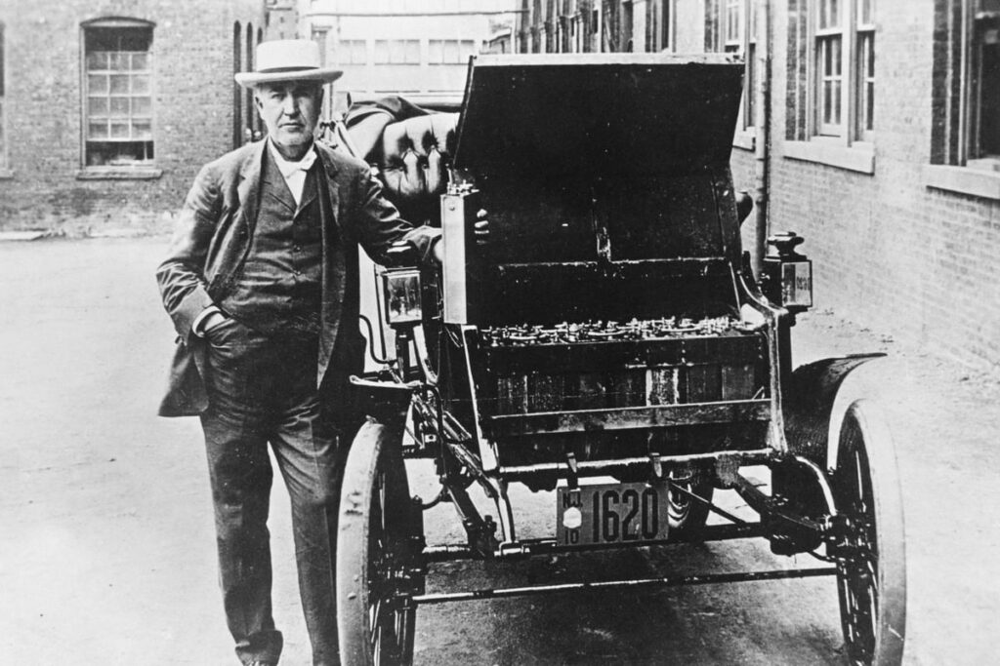

У першій половині XIX століття в автомобільній індустрії існувало всього дві альтернативи електромотору – парові двигуни і перші двигуни внутрішнього згоряння, які працювали на газоподібному водні. Ці агрегати мали дуже низький ККД та були громіздкими, через що автомобілі їхали повільно і погано керувались, а ще шуміли, гули, пихкали та видавали ще цілу “симфонію” неприємних звуків і запахів
Електромотор такими недоліками не обтяжений. Навіть найперші прототипи електродвигунів важили небагато і працювали відносно тихо, хоча швидкісні показники у них були приблизно такі ж, як у ДВС і парових двигунів. У 1830-1835 роках (точна дата невідома), шотландський винахідник Роберт Андерсон зібрав перший в світі екіпаж на електротязі. Головний мінус двомісного електромобіля Андерсона полягав в одноразових батарейках. Відповідно той електрокар не міг набути популярності серед споживачів.
У 1835 році голландець Стратин Гронінген з помічником Крістофером Беккером зібрали свій варіант електрокара, який, як і екіпаж Роберта Андерсона, вміщував двох. Крім місткості “салона”, у електромобіля Гронінгена-Беккера була ще спільна риса з концептом Андерсона – одноразові джерела живлення. У 1842 році американський коваль Томас Девенпорт зібрав електромобіль, який працював від електромагнітного мотора. До речі, сам мотор також є розробкою Давенпорта. Однак в якості енергоносіїв використовував одноразові батареї
В цьому ж році вже знайомий нам шотландець Роберт Андерсон, який поїхав в Штати в пошуках кращого життя, зібрав черговий концепт з електромотором. Цього разу також винахідник використовував одноразові гальванічні елементи. З такими батарейками автомобіль їхав довше, хоча енергоносії як і раніше не можна було зарядити
У підсумку, головний недолік всіх електромобілів першої половини XIX століття – одноразові енергоносії. Через це суспільство спочатку не розглядало електромобілі як альтернативний засіб пересування
Для нового витка розвитку електромобілебудування мали з’явитися багатозарядні акумулятори, які винайдуть пізніше. Одні з перших ентузіастів електромобільності, вчені Вільям Гроув і Гастон Планте, в різний час і незалежно один від одного, запропонували дві кардинально різні ідеї для вирішення проблеми одноразових енергоносіїв
Вільям Гроув в 1839 році винайшов паливний елемент, який перетворює хімічну енергію в електричну. Так звана “газова батарея” (таку назву винаходу дав сам Гроув) – це камера з розчином сірчаної кислоти, в якому були два електроди – цинковий і платиновий. Між електродами перебувала пориста перегородка (мембрана). За словами винахідника, паливні елементи повинні були стати “комерційно вигідними джерелами електроенергії” Однак перші автомобілі, в яких використовували паливні елементи, почали випускати тільки в 60-х роках XX століття, тобто майже через 130 років після винаходу першої паливної комірки
Вільям Гроув винайшов першу паливну комірку
Чому вийшла така перерва – невідомо. Можливо, паливні елементи Гроува затьмарили винахід іншого вченого, а саме свинцево-кислотний акумулятор, який в 1859 році винайшов француз Гастон Планте. А може конкуренція з боку ДВЗ Завдяки багатозарядному свинцево-кислотному акумулятору Планте, вчені й винахідники другої половини XIX століття знову повернулися до ідеї створення повноцінного електромобіля. Однак залишилася ще одна проблема, яка вийшла на перший план, – дальність їзди. Акумулятори того часу не зберігали велику кількість енергії, тому їх потрібно було дуже часто заряджати Рішень у проблеми було два. Одні винахідники вибрали кількісний метод і просто ставили більше акумуляторів. Яскравий приклад – творіння англійських винахідників Вільяма Айртора і Джона Перрі, які в 1881 році модифікували трицикл Starley і обладнали концепткар електромотором. Достовірно відомо, що електродвигун трицикла працював від 10 (!) свинцево-кислотних акумуляторів. Електрокар розвивав максимальну швидкість 14 км/год і без підзарядок проїжджав до 40 км